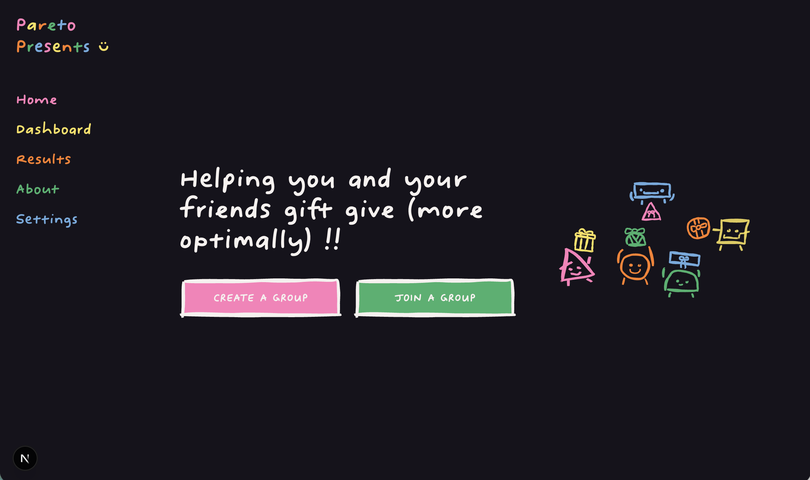

Pareto Presents

Pareto Presents is a Secret Santa matching web app that uses Pareto-optimal assignment to make gift exchanges actually satisfying. Group members submit their preferences through a survey, and a simulation engine finds the assignment where no one can be matched better without making someone else worse off — the Pareto optimum. The results are visualized on an interactive dashboard for the whole group to see.
The Problem
Traditional Secret Santa draws are random. You might get matched with someone whose interests you know nothing about, or get assigned to give a gift in a category you have no idea how to shop for. Pareto Presents treats the matching as what it actually is — an optimization problem — and solves it properly. Every member submits preferences, and the simulation finds the assignment that maximizes collective satisfaction, so the group as a whole ends up better matched than any random draw could achieve.
How It Works
The system is built across three layers that work together event-driven, without the frontend ever having to trigger a calculation manually:
- A user creates a group and shares an invite code. Members join and submit their preferences through the dashboard survey. All of this is stored in a Supabase PostgreSQL database with tables for groups, memberships, preferences (
JSONB), and cached simulation results. - When anyone joins or updates their preferences, a Supabase Database Webhook fires automatically, sending the affected
group_idto the Python API — no manual trigger needed. - The FastAPI simulation service (Dockerized, deployed on Fly.io) receives the webhook, fetches all current preferences for the group, runs the Pareto-optimal matching algorithm, and writes the new results back to the
simulation_resultstable. - The Next.js frontend simply reads the latest cached results from that table and renders them as interactive charts via Recharts. It never needs to know when or how the calculation ran.
My Role — Art, Design, Product, and About Page
I wore several hats on this project. As product manager, I helped shape the feature scope and user flow — what the key pages needed to do, how the group invite system should work, and what the dashboard experience should feel like. As the designer, I handled the visual identity: the branding, logo, color system, and UI design in Figma, as well as all digital art assets in Procreate and Aseprite. On the frontend team, I built the About page — introducing the team and explaining the simulation methodology for users who want to understand the math behind their matches.
Try the simulation GitHub Repository
Through this project I've learned and practiced:
- Product management — defining scope, user flows, and feature priorities for a full-stack web app
- Next.js with TypeScript and Tailwind CSS for a production-deployed frontend
- Event-driven architecture — Supabase Database Webhooks triggering a separate Python microservice
- FastAPI and Docker for packaging and deploying a standalone simulation service on Fly.io
- Supabase: PostgreSQL schema design with JSONB columns, row-level security, and Auth
- Recharts for interactive data visualization of simulation outputs
- Branding and visual identity design — logo, color system, and UI in Figma, Procreate, and Aseprite
- Communicating a technical concept (Pareto optimality) through clear, accessible product writing